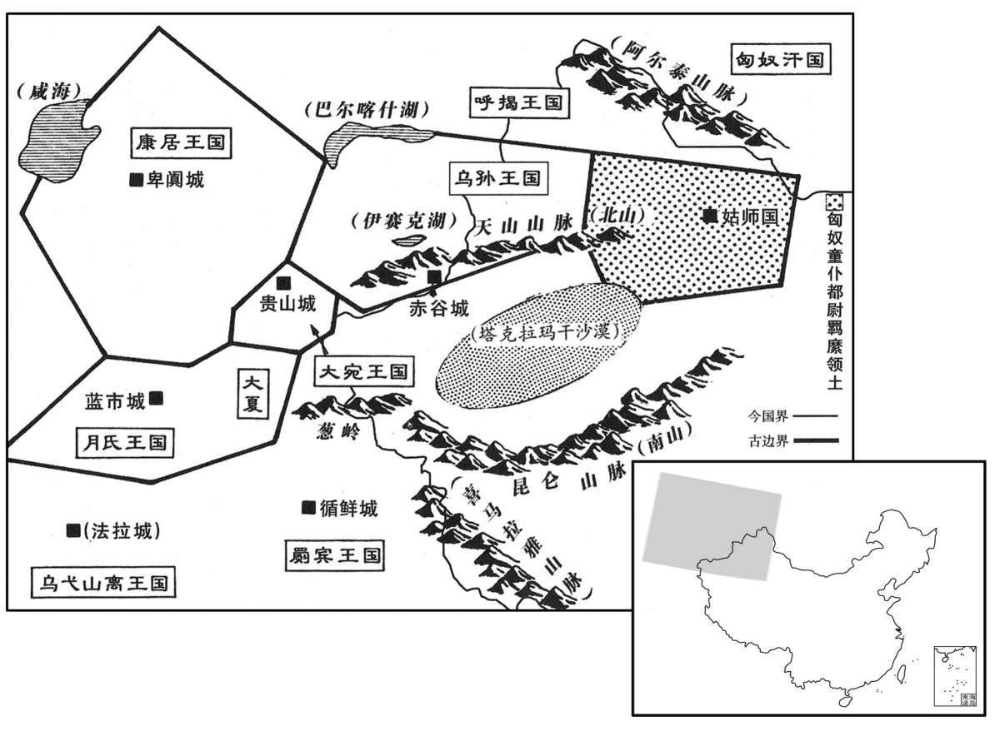

公元前126年资治通鉴：本年记事、原文与白话对照
按原书编年位置阅读；追叙和史论不等于本年发生的事件。白话采用所据译本，缺译不以生成译文补齐。
卷18 · 本年记事
公元前126年 · 汉世宗孝武皇帝元朔三年
元朔三年〔（乙卯、前一二六）〕
本年事件索引（现代整理）

本年形势与背景参考图
冬，匈奴军臣单于死，其弟左谷蠡王伊稚斜自立为单于，〔匈奴左、右谷蠡王，在左、右贤王之下。谷蠡，音鹿黎。索隐曰：稚，持利翻。斜，士嗟翻，邹诞生音直牙翻。盖“稚斜”胡人语，近得其实。〕攻破军臣单于太子于单，于单亡降汉。〔于单，音丹。降，户江翻。〕
冬季，匈奴军臣单于死，他的弟弟左谷蠡王伊稚斜自立为单于，进攻并打败了军臣单于的太子於单，於单逃到汉朝来归降。
以公孙弘为御史大夫。是时，方通西南夷，东置苍海，北筑朔方之郡。公孙弘数谏，以为罢敝中国以奉无用之地，愿罢之。〔数，所角翻。为罢，读曰疲。〕天子使朱买臣等难以置朔方之便，发十策，弘不得一。〔师古曰：言其利害十条，弘无以应之。难，乃旦翻。〕弘乃谢曰：“山东鄙人，不知其便若是，愿罢西南夷、苍海而专奉朔方。”上乃许之、春，罢苍海郡。
汉武帝任命公孙弘担任御史大夫。这时，朝廷正开通西南夷，在东方设置苍海郡，在北方修筑朔方郡的郡城。公孙弘多次进谏，认为以中原地区疲惫不堪为代价，去供奉那些无用之地，得不偿失，请求废止这些举动。武帝让朱买臣等人就设置朔方郡的便利，对公孙弘进行反驳，提了十个问题，公孙弘连一个也回答不了。公孙弘就表示请罪说：“我是崤山以东的乡鄙之人，不知道设置朔方郡有这么多的好处，请求废止对西南夷、苍海地区的经营而集中力量经营朔方郡。”武帝同意了他的请求。春季，罢废了苍海郡的建置。
弘为布被，食不重肉。〔言不重肉味也。重，音直龙翻。〕汲黯曰：“弘位在三公，奉禄甚多；〔奉，扶用翻。〕然为布被，此诈也。”上问弘，弘谢曰：“有之。夫九卿与臣善者无过黯，然今日廷诘弘，诚中弘之病。〔中，竹仲翻。〕夫以三公为布被，与小吏无差，诚饰诈，欲以钓名，〔师古曰：钓，取也；言若钓鱼之谓也。〕如汲黯言。且无汲黯忠，陛下安得闻此言！”天子以为谦让，愈益尊之。
公孙弘用麻布做被子，一顿饭不摆设两种肉菜。 汲黯说：“公孙弘高居三公之位，朝廷给他的俸禄很多；但是他用布做被子，这是骗人的把戏。”武帝就此询问公孙弘，公孙弘谢罪说：“确有其事。说到九卿当中与我关系好的，没有人超过汲黯了，可是今天他在朝廷之上质问我，确实切中我的问题。说到以三公的显赫富贵，而制作布被，与小官吏没有区别，这确实是矫饰做作，想借此沽名钓誉，正象汲黯所说的那样。况且，如果没有汲黯的忠直，陛下怎么能听到这些话！”武帝认为公孙弘谦让，越发尊重他。
三月，赦天下。
三月，大赦天下。
夏，四月，丙子，封匈奴太子于单为涉安侯，数月而卒。
夏季，四月，丙子（初七），武帝封匈奴太子於单为涉安侯，过了几个月於单就死了。
初，匈奴降者言：“月氏故居敦煌、祁连间，为强国，〔降，户江翻。氏，音支。敦煌、张掖，匈奴破月氏，使昆邪王居之；汉开置郡。祁连，山名，即天山也，匈奴呼天为祁连；在张掖西北。敦，徒门翻。〕匈奴冒顿攻破之。老上单于杀月氏王，以其头为饮器。余众遁逃远去，怨匈奴，无与共击之。”上募能通使月氏者。〔使，疏吏翻。〕汉中张骞以郎应募，出陇西，径匈奴中；单于得之，留骞十余岁。骞得间亡，乡月氏〔间，古苋翻。乡，读曰向。〕西走，数十日，至大宛。〔西域传：大宛国治贵山城，去长安万二千五百七十里；西南至大月氏所居六百九十里。宛，于元翻。〕大宛闻汉之饶财，欲通不得，见骞，喜，为发导译抵康居，〔导者，引路之人；译者，传言之人也。康居国治乐越匿地，到卑阗城，去长安万二千三百里。为，于伪翻。〕传致大月氏。〔传，张恋翻。〕大月氏太子为王，既击大夏，分其地而居之，〔大夏国在大宛西南，都妫水南。月氏居妫水北。〕地肥饶，少寇，〔少，诗沼翻。〕殊无报胡之心。骞留岁余，竟不能得月氏要领，〔李奇曰：要领，要契也。师古曰：要，衣要也；领，衣领也。凡持衣者执要与领；言骞不能得月氏意趣，无以持归于汉，故以要领为喻。要，一遥翻。〕乃还；并南山，〔史记曰：南山即连终南山，从京南东至华山，东北连延至海，即中条山也。从京南而西，连接至葱岭万余里，故云并南山也。西域传云：其南山东出金城，与汉南山属。还，从宣翻，又如字；下同。并，步浪翻。〕欲从羌中归，复为匈奴所得，〔复，扶又翻。〕留岁余。会伊稚斜逐于单，匈奴国内乱，骞乃与堂邑氏奴甘父逃归。〔服虔曰：堂邑，姓也。汉人；其奴名甘父。父，音甫。〕上拜骞为太中大夫，甘父为奉使君。骞初行时百余人，去十三岁，唯二人得还。〔考异曰：史记西南夷传曰：“元狩元年，张骞使大夏来，言通身毒国之利。”按年表，骞以元朔六年二月甲辰封博望侯，必非元狩元年始归也。或者元狩元年，天子始令骞通身毒国。疑不能明，故因是岁伊稚斜立终言之。〕
起初，匈奴归降朝廷的人说：“月氏原来居住在敦煌和祁连山之间，是一个强国，匈奴冒顿单于攻破了它。老上单于杀了月氏国王，把他的头骨做成了饮酒的器皿。其余的月氏部众逃走到远方，怨恨匈奴，但没有人与他们联合去进攻匈奴。”武帝就招募能出使月氏国的人。汉中人张骞以郎官的身份应募，从陇西郡出发，直接进入匈奴的腹地；匈奴单于捉住了张骞，把他拘留了十多年。张骞得到机会逃脱，向着月氏国所在的西方走去，过了数十日，到达大宛国。大宛国早就听说中国富有，想通使结好，却不能实现，见到张骞，十分高兴，替他安排了向导和翻译，抵达康居国，再转送到大月氏国。大月氏原来的太子做了国王，进攻大夏国之后，分割了大夏国的土地而安居下来，当地土地肥沃富饶，很少有外敌入侵，已没有丝毫向匈奴复仇的打算了。张骞滞留了一年多，终究不知道月氏人打的什么主意，就启程返回；张骞沿着南山走，想通过羌人的居住地返归，又被匈奴人捉住了，拘留了一年多。正逢伊雅斜驱逐於单，匈奴国内混乱，张骞就和堂邑氏的奴隶甘父逃脱归来。武帝任命张骞为太中大夫，甘父为奉使君。张骞当初出发时有一百多人，离开汉朝十三年，只有他们二人得以生还。
匈奴数万骑入塞，杀代郡太守恭，〔代郡，唐蔚州、武州界。〕及略千余人。
匈奴的几万骑兵越过边界，攻杀代郡太守恭，还掳掠了一千多人。
六月，庚午，皇太后崩。〔武帝母王太后也。〕
六月，庚午（初二），皇太后驾崩。
秋，罢西夷，独置南夷、夜郎两县、一都尉，稍令犍为自葆就，〔师古曰：葆，与保同；令自保守，且成其郡县。〕专力城朔方。
秋季，朝廷罢废了在西夷地区的建置，只设了南夷、夜郎两县和一个都尉，后来又逐渐令犍为郡自行保全并完善地方建置，以便朝廷集中力量修筑朔方郡的郡城。
匈如又入雁门，杀略千余人。
匈奴再次入侵雁门郡，杀害和掳掠一千多人。
是岁，中大夫张汤为廷尉。汤为人多诈，舞智以御人。时上方乡文学，〔乡，读曰向。〕汤阳浮慕，事董仲舒、公孙弘等；以千乘儿宽为奏谳掾，〔儿，本郳姓，以国为氏，其后去“邑”。以为廷尉掾，专主奏谳也。儿，五奚翻。谳，鱼蹇翻。掾，俞绢翻。〕以古法义决疑狱。所治：即上意所欲罪，与监、史深祸者；〔班表，廷尉有左、右监，秩千石。汉官曰：廷尉狱史二十七人。深祸，谓持文深刻，欲致人于祸者。〕即上意所欲释，与监、史轻平者；上由是悦之。汤于故人子弟调护之尤厚；〔师古曰：调，和适之令得其所；护，谓保佑之也。〕其造请诸公，〔师古曰：造，诣至也。请，谒问也。造，七到翻。〕不避寒暑。是以汤虽文深、意忌、不专平，〔文深，谓持文深；意忌，谓其意忌前也；不专平，谓不专于持平也。〕然得此声誉。汲黯数质责汤于上前〔质，对也，对面责之也。或曰：质，正也，以正义责之。数，所角翻。〕曰：“公为正卿，〔汉官，九卿之外，又有列于九卿者，故谓九卿为正卿。〕上不能褒先帝之功业，下不能抑天下之邪心，安国富民，使囹圄空虚，何空取高皇帝约束纷更之为！〔师古曰：言何为乃纷乱而改更也。更，工衡翻。〕而公以此无种矣。”〔言当诛及子孙。种，章勇翻。〕黯时与汤论议，汤辩常在文深小苛；黯伉厉守高，〔伉，口浪翻，健也，高也。厉，严也。〕不能屈，忿发，骂曰：“天下谓刀笔吏不可以为公卿，果然！必汤也，令天下重足而立，〔累足而立，惧之甚也。重，直龙翻。〕侧目而视矣！”
这一年，中大夫张汤出任廷尉。张汤为人十公狡诈， 玩弄巧智驾御他人。当时，武帝正倾心儒学，张汤就假装敬慕儒家大师的的样子，尊重董仲舒、公孙弘等人；他任用千乘人宽担任奏谳掾，用古代的法令和经义判决疑难案件。张汤审判案件的手法是：倘若是皇上想加罪处治的人，就把他交给那些执法严苛的监、史审判；如果是皇上想要从宽解脱的人，就把他交给执法轻平的监、史审判；武帝国此对他很满意。张汤对于老朋友的子弟，照顾得特别周到；他去诸公重臣家中问候请安，不避严厉寒酷暑。所以，张汤虽然执法来苛、心怀妒忌，断狱不公平，却博得了好名声。汲黯多次在武帝而前质问、责备张汤说：“您身为正卿，上不能褒扬先帝的功业，下不能抑制天下百姓的邪心，使国家安定、百姓富裕，临狱空虚，为什么却只知把高皇帝所定的律令胡乱变更！而且您将会因此而断子绝孙了。”汲黯经常与张汤争辩，张汤的言论在紧扣律令条文，大小节上苛求，汲黯伉直严峻，坚守高沿的原则，却不能驳倒张汤，愤极发怒，大骂张汤说：“天下人都说刀笔吏不能做公卿，果然如此！如果一切都按张汤的主张去做，将使天下人陷入重足而立、侧目而视的恐惧之中了！”